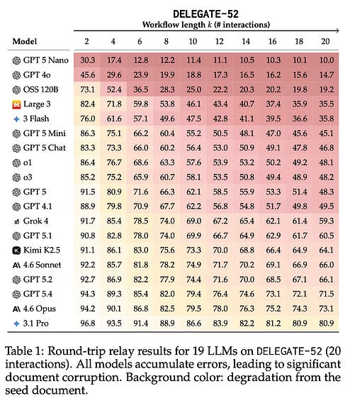

AI-Based Threats to Data Integrity in Scientific Research
A recent arXiv preprint from Microsoft Research identifies a potentially devastating problem for data integrity posed by the use of large language models (LLMs) across a wide variety of domains. The problem the authors identify is that LLMs can silently corrupt documents with increasing severity across repeated editing cycles. The authors conclude that when users delegate document modification tasks to LLMs, even the best models can produce severe unintended alterations to their original source documents.
The study presents a benchmark called DELEGATE-52 which passes documents from 52 different domains through repeated LLM interaction cycles in order to estimate the scale of corruption. To do so, the authors use an edit-reversal approach to gauge the model's fidelity to the original document content. If I understand it correctly, the cycle follows these steps:
- feed the LLM a document and an edit prompt,
- the LLM emits a modified version of the document,
- feed that modified version back to the LLM with an inverse prompt to undo the edit, and
- compare the reconstructed version against the original before using it as the starting point for the next round-trip.
As the cycle length increases, as the documents increase in size, and as more distractor documents are also included in the workspace, the level of corruption increases. After 20 interactions, even the best frontier models degraded document fidelity by ~25% on average, while the average across all 19 tested models was around 50%. Table 1 from the preprint shown below illustrates the results across the models.

In the main part of the study, the authors round-tripped documents through the LLM, similar to how an average AI user might drop a document into ChatGPT's web-app and accept an edited document in return. Not fully satisfied with the result, the user passes the edited version again to the model, oblivious to the fact that the document is being corrupted in ways that are not immediately obvious. I can easily imagine a situation where, for example, a doctoral student might use a lower-tier LLM, provided by the university itself and accessed via the model's web app, to copyedit their dissertation, unaware of how their writing is being corrupted.
The authors also tested what happens when the LLM is provided with a basic harness and access to agentic tools, finding similar results. However, an extensive discussion of this approach at Y Combinator's Hacker News suggests some issues with the implementation, particularly with the limitations of the harness used compared to contemporary examples, such as Anthropic's Claude Code and OpenAI's Codex, which provide a structured environment for the LLM to operate within, as well as visible "diffs" which explicitly call out the changes to document versions.
While the level of document corruption probably varies significantly depending on the setup, the results are serious enough, even in the preprint's basic setup, to take a step back and question how use of LLMs might threaten to corrupt the chain of evidence in scientific research. This could be a disaster for scientists who, for example, delegate data cleaning tasks to AI assistants and uncritically accept the resulting artifacts as authoritative.
While new AI tools have been helpful in allowing researchers to leverage code-based tools in their work, researchers should probably avoid treating LLMs as keepers of their research artifacts. Source documents and raw data should be preserved in deterministic, verifiable chains of evidence. Introducing non-deterministic LLMs into otherwise deterministic research workflows presents a new threat to the integrity of scientific research. At a minimum, this research shows that allowing LLMs to manipulate research artifacts directly is a potential threat. Each cycle of direct manipulation increases the chances of introducing potentially retraction-worthy conclusions into the carefully crafted manuscripts of thoughtful scientists.
However, this problem is perhaps less threatening to a common AI-assisted workflow. Let's say a researcher has a large database of files that need to be transformed into an analyzable format. Within the context of an appropriate LLM harness (e.g. Claude Code), the researcher specifies a workspace for the LLM to inspect a copy of the data in order to gather information on its structure. The researcher prompts the LLM to call up a set of tools, generate code scripts, and conduct test runs in its own agentic space. The researcher then takes the code and iteratively executes it themselves on their data until it works to produce analytically useful results. In this situation, the original data remains untouched by the LLM. That is, unless the researcher engages "Yolo mode", i.e. --dangerously-skip-permissions, and something goes horribly but predictably wrong.
From the standpoint of the careful AI-assisted researcher, the code is the relevant output, not the data. Scientific processes must be replicable, and "I prompted Claude to clean my data" is not replicable. On the other hand, "I prompted Claude for a script that everyone else can inspect and run on the data for themselves" is replicable. Using AI in the code generation process, code of which is preserved and proven to execute on the original untouched data, can be very useful in scientific production. Giving researchers the ability to utilize new tools they never thought possible, because the moat of code around advanced tools has a new AI-generated drawbridge laid across it, is an advancement for science. However, researchers must also remain skeptical of delegating workflow tasks that elevate models to the status of stewards or custodians of basic research artifacts.
Acknowledgements
I discovered this preprint from a YouTube video by Mo Bitar, a prominent critic of AI exuberance and the founder of the popular note-taking app Standard Notes.
Sources
- Laban, P., Schnabel, T., & Neville, J. (2026). LLMs Corrupt Your Documents When You Delegate. arXiv:2604.15597. https://arxiv.org/pdf/2604.15597
- Hacker News. (2026) "LLMs corrupt your documents when you delegate." https://news.ycombinator.com/item?id=48073246